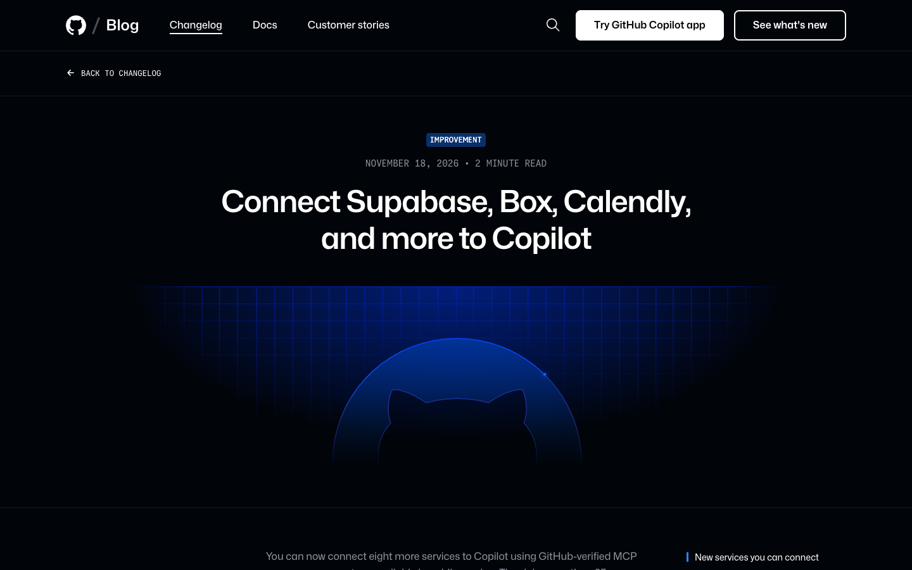
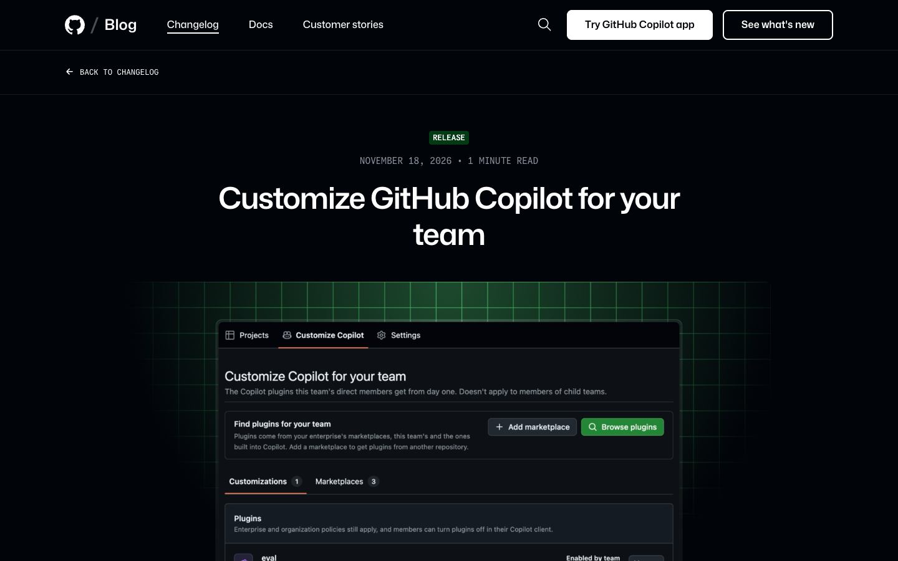
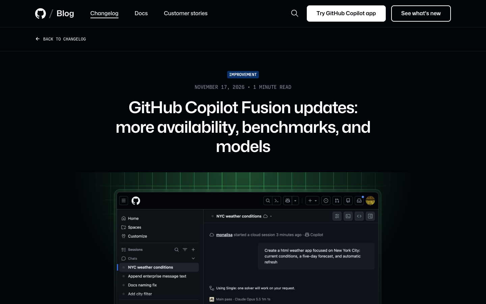
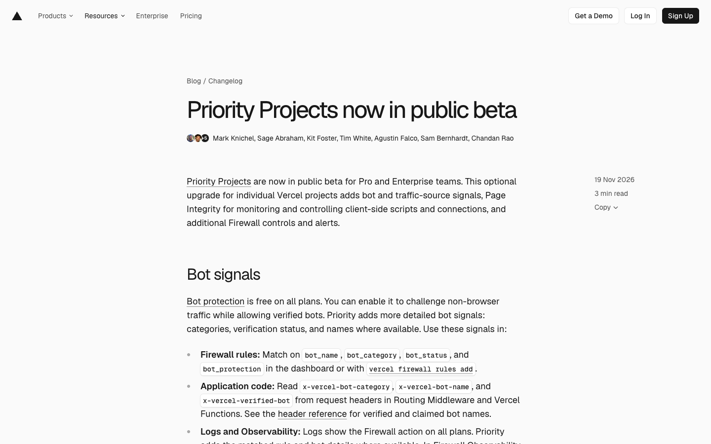
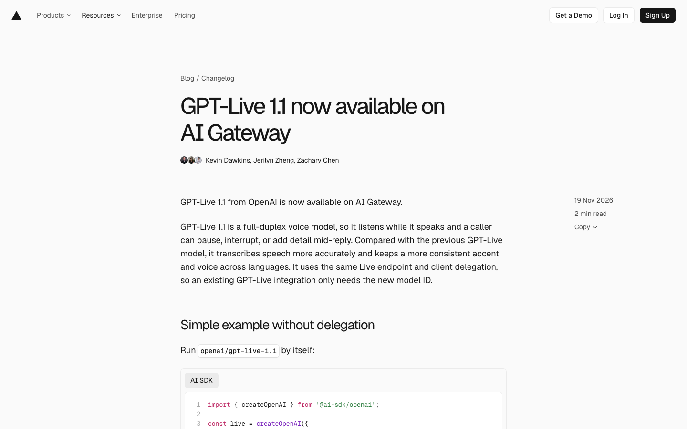
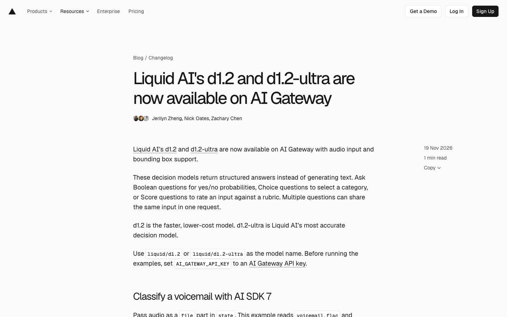

今天没有新的 Figma 大版本，也不需要把周五的更新再热一遍。更实在的变化发生在“代理能接什么、谁替团队决定、上线后怎么付钱”这三层：GitHub 把连接器和团队插件做成共享配置，Vercel 则把脚本、机器人、语音会话与多模态判定拉进可观测和可计费的边界。
这批功能都在缩短入口，但入口短不等于交付成本低。一个连接器进了 public preview，后面还跟着管理员开关、MCP allowlist、第三方服务权限；一段语音在等待委派模型时，语音计费没有暂停。产品团队现在缺的不是更多“能做”，而是能看见谁在做、做了多久、碰了什么数据。
今天的视觉主卡反而给了另一种提醒：Cloud9 没用参数表解释坐感，而是用水、绳索、白色织物和失重姿态把“软但有支撑”翻译成身体能理解的画面。工具链负责把边界说清，创意负责让功能不用说明书也能被感到。

GitHub 给 Copilot 加了八个已验证连接器：Box、Buildkite、Calendly、ClickUp、Mixpanel、Supabase、Webflow 和 Wix，当前是 public preview，所有 Copilot 方案都能用。Business / Enterprise 还要管理员开启 Editor preview features；如果 MCP allowlist 按连接器逐项列举，新服务也得单独放行，Box 一类服务端还可能有自己的管理员开关。
设计工程真正能省的不是“少开一个网页”，而是把 Webflow 内容、Mixpanel 数据和 Supabase schema 放进同一条任务链。先别把八个全开：挑一个会产生写操作的连接器做权限演练，确认审批、审计和撤销都能回读，再扩到团队。

组织 owner 和 team maintainer 现在可以把批准过的 Agent Plugins 设成团队默认，功能对 Copilot Business 与 Enterprise 正式开放。默认项会出现在直属成员的 VS Code、Copilot app 和 CLI；子团队不继承，成员在政策允许时也能关闭，企业与组织策略仍然优先。
这个层级设计比“全公司统一”聪明：设计系统组可以预装 token、a11y、Storybook 相关插件，业务团队保留关掉无关能力的余地。代价也写在细节里——子团队不会继承，团队树一复杂，默认能力很容易分叉；维护者得把插件清单和版本审计当成正式资产。

Copilot Fusion 现在能在 github.com、Visual Studio 和 GitHub Mobile beta 里选择，并给 Standard、High、Max 三档补了新的底层模型。GitHub 还公布 Copilot Fusion Max 在 Terminal-Bench 4.1 的 71.2% resolution rate，以及相对两款对照模型的成本差；结果挂在 Stanford、Harbor 与 Laude Institute 的公开榜单上。
这比厂商自画一张“更强”曲线多一步，但仍不是产品设计团队的真实任务。还没实测，先不下结论；更合理的验证是固定一组“改组件状态、补键盘路径、修响应式、回写截图”的任务，看不同 effort 是否稳定选对模型，别拿一次 terminal 榜单代替自己的交付回归。

Vercel 的 Priority Projects 面向 Pro 与 Enterprise 团队开放 public beta：增加更细的 bot 名称、类别与验证状态，标记 Tor / VPN / 代理等流量来源，用 Page Integrity 盘点客户端脚本和连接，再通过 CSP 完成 detect、review、block；还补了异常提醒、响应条件限流和更高的 Firewall 上限。
价格不轻：每个项目每月 200 美元。Page Integrity 另收 每 1,000 个 monitored page views 2 美元，每次最多覆盖 100 个脚本；OWASP inspection 也按请求与 payload 另计。对营销站和支付页，它的价值不是再多一个安全徽章，而是终于能回答“谁又往页面塞了脚本、为什么被批准、何时开始连外部域名”。先在 preview 环境跑 detect / review，别直接拿 block 当第一步。

GPT-Live 1.1 通过 Vercel AI Gateway 提供全双工语音，会边听边说，也允许用户暂停、打断或中途补充；原有 GPT-Live 集成只需换 model ID。client delegation 可以把订单一类任务交给另一个文本模型，但权限、确认与取消仍由应用自己控制。
这里有一条容易被 demo 掩掉的账：委派模型另行计费，等待它时语音 session 仍持续消耗。Gateway 按供应商价格计费、不加 inference markup，官方这页没有给出统一的每分钟数字。做语音原型时应把“静默等待、打断恢复、取消委派”三段时长单独记账；只测顺畅对话，会把最贵的状态漏掉。

Liquid AI 的 d1.2 / d1.2-ultra 不负责写一段像人的回复，而是返回 boolean、choice、score 或 bounding box 这类结构化答案；同一输入可以同时问多道题，现已支持音频输入和图像定位。官方示例包括判断语音是否在申请退款、在表单图片里找签名，调用会进入 AI Gateway 日志并占用预算。
这类模型比“让大模型看图后自由发挥”更适合设计 QA：检查按钮是否越界、判断截图是否命中状态、给一组可访问性规则打分，都能直接进入自动化分支。官方页没给 d1.2 两档的具体单次价格，准确率也只用“更快更便宜 / 更准确”概括；还没实测，先用十几张人工标注截图测框选偏差和阈值稳定性。
这是 Leipzig 创意机构 FrameScale 为 W. Schillig 的 Cloud9 椅与 nanoSOFT 坐感技术做的 49 秒片。Stash 与 Vimeo oEmbed 已核验片名、作者、时长和落地页；FrameScale 负责策略、规划与制作，真人部分还在 W. Schillig 现场与 CEO 一起拍摄。品牌从 1949 年开始做软体家具，Cloud9 是 nanoSOFT 系列的第一件产品。
画面不急着拍旋钮、结构或材料剖面，而是反复用一种矛盾触感：绳索的纤维既松又有拉力，椅子沉入水里却保持完整轮廓，人物后仰接近失重，白色织物最后直接变成包裹身体的座椅曲线。低饱和白、灰、浅蓝把 AI / VFX 的奇观压低，留给材质、风和水做运动；“软但有支撑”先被身体理解，技术名词才有落点。
当前网络下 Vimeo player 返回 HTTP 200，但无论从 Feishu referrer 还是 Stash 页面进入，视频元素都停在 readyState=0、0×0，因此不把五张官方高清帧猜成完整镜头节奏。飞书会按规则降级为 image fallback，保留 Stash 文章https://www.stashmedia.tv/framescale-floats-the-cloud9-chair-for-w-schillig/ 与 Vimeo 原片https://vimeo.com/1249151418；静态判断来自 Stash 的 2000×1125 主视觉和五张 1920×1080 制作帧。
下一支功能型产品片可以照这个方法先做一张“触感翻译表”：每个抽象卖点只配一个身体动作、一种材质和一种力学变化，再决定要不要上 3D、AI 或实拍。前端 hero 不必复制整支片，先用一段 6–8 秒的材质形变和清晰的产品轮廓，把第一屏性能预算留给能说清卖点的运动。
今日已覆盖：GitHub Copilot 八个新连接器、团队插件默认配置、Copilot Fusion 多端与 Terminal-Bench 信号、Vercel Priority Projects、GPT-Live 1.1、Liquid AI d1.2 / d1.2-ultra。
视频已覆盖：FrameScale × W. Schillig「Cloud9 Chair」，飞书预览记为 fallback=image，保留 Stash 与 Vimeo 链接。Stash 已登记 Cloud9、The Divide、OFFF Montreal panel、Dancing on Osees、Raven R；除非出现稳定原片、制作 breakdown、价格权限变化或实测证据，不在下一期重复展开。